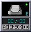

プログラミングの勉強がてら、WindowMaker 用のドックアプリ, wmpop3 を複数アカウント対応にしました。
WindowMaker のドックアプリで、 POP3 サーバにメールがあるかどうか、何通届いているかを知らせてくれるものです。
今までも "-c" オプションを使って複数起動する事で複数のアカウントをチェックする事は可能でしたが、アカウントが多くなるとそれだけで沢山の wmpop3 に占拠されてしまい、狭くなってしまう感がありました。そこで 1つ起動するだけで OK にしようと思い、作成しました。
アカウントが4つ以上ある場合、1つですべてのアカウントをチェックするよりも、設定ファイルを2つにして半分ずつ分担した方が能率が良さそうな… (^^;
もともと複数起動するのがイヤだったから作成したのに (^^;;
設定ファイルは次のようになっています。
# Replace all < > with appropriate data
#
# Apprication settings
mailclient pine # default mail client
autochecking 0 # 1 enables, 0 disables
mailcheckdelay 2 # default mail check time in minutes
viewallmessages 1 # 0 Shows both read and unread messages
# and 1 shows only unread messages
# when showing each account
#
# Server settings
# You can define 8 or less accounts.
{
popserver foo.net
port 110 # default port
username hoge
password HogEhOgE
}
{
popserver bar.ne.jp
port 110 # default port
username hoge_hoge
password HhoOgGEe
}
まずアプリケーションの設定が4項目あり、次にアカウント毎の設定4項目を{}で括って、アカウントの分だけ書きます。 ( なお、 { と } はそれだけで1行使うようにして下さい。 )
各設定項目について解説します。
| mailclient | 使用するメーラを指定します。 メール箱の画面をクリックすると指定したメーラが起動します。 |
|---|---|
| autochecking | 一定時間毎に自動でチェックするかどうかを指定します。 0 でチェックしない、1でチェックします。 |
| mailcheckdelay | 自動チェックをする場合、その間隔を分で指定します。 複数のアカウントでは、1つ目のアカウントチェック後ここで指定した時間が経過したら2つ目、また経過したら3つ目…となります。 |
| viewallmessages | ※オリジナルのものと項目の名前が同じですが、動作は違います。 各アカウント毎のメール数の表示時に、新着のみ表示するか全て表示するかを指定します。 0 で全て表示、1 で新着のみ表示です。 |
| popserver | POP3 サーバ名を指定します。 |
| port | POP3 サーバのポートを指定します。( 通常は 110 です。) |
| username | POP3 のユーザ名を指定します。 |
| password | POP3 のパスワードを指定します。 |
アカウントは最大8つまで指定できます。ソースをちょっといじれば更に増やすことも可能です。パッチを当てた後に、 wmpop3/wmpop3.c の 49行目、 "#define MAXACOUNTS 8" を変更して下さい。
起動すると、このような画面が表示されると思います。どれかのアカウントに新着メールがあるとメール箱がこのように変わります。真ん中の数字は、右側が全メール数、左側が新着メール数です。
下のボタンは、左が自動チェックの ON / OFF 、真ん中が強制的にチェック、右は全アカウント合計 / 各アカウント毎の表示切替えです。
全アカウント合計の表示時に真ん中のボタンをクリックすると、すぐに全てのアカウントについてチェックを開始します。
どれかのアカウントでエラーがあると、このように、メール箱の横に "E" の文字が表示されます。
下の右のボタンを押すと、このような画面に切り替わります。設定ファイルで2番目に設定されているアカウント ( 真ん中の "AC" に続く数字がアカウントの番号 ) について、新着 / 全メール数を表示 ( ":"の後の数字 ) します。新着と全メール数のどちらを表示するかは設定ファイルで記述します。
この状態で真ん中のボタンを押すと、そのアカウントのみすぐにチェックします。
このアカウントでエラーがあった場合、このように、メール数を表示するところに "ER" と表示されます。
このパッチは私のプログラミングの学習がてらに作成したものなので、バグ等動作不良の存在する可能性は否定できません。 wmpop3 及び私のパッチを利用したことによりいかなる問題が生じても当方では責任を負えません。
| WMPop3-0.5.6a.tar.gz | オリジナルのソースファイル |
| wmpop3-0.5.6a-ma-1.patch | パッチファイル第1版 作成 : 2002年2月7日 |
オリジナルの配布元は http://www.cs.mun.ca/~scotth/index.htmlです。
| 2002年 2月 7日 | 公開第1版。 |
他力本願。
自分ではこれ以上修正する気は当分起きないと思われます。
自分に必要な機能は揃ったので。
本当はローカルスプールとか APOP とか IMAP とか全部に対応させると幸せになれそうですが、 (そうなったらもはや wm"pop3" では無い気もしますが) 需要もなく知識も技量も足りなすぎるため対応する予定は全くありません。